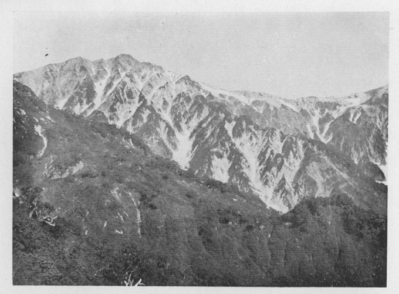

今では日本北アルプスの名で広く世に知られている飛騨山脈は、加藤理学士の説に
拠ると、凡そ南十度西より北十度東に向って並走せる数条の連脈から成っているものであるという。
其連脈の一に白馬山脈というのがある。立山山脈との対称上から
又後立山山脈とも呼ばれ、飛騨山脈中の最も長い山脈で、北は日本海岸の親不知附近から起り、越中と越後及び信濃との国境を南走して遠く飛騨国内に達しているが、中に就て越中、越後及び信濃の三国界から飛騨、信濃及び越中の三国界附近に至る、直径にして五十五
粁約十四里の間が主要部ともいう
可き部分であって、最高二千九百九十米、最低二千百八十米、平均高度は二千六百二十米に及んでいる。そして二千八百米を超えている峰は十五、六座を下らないのである。それが松本平の西の縁から大屏風を建てたように急に聳え立っているので、地形の相違の著しい為に、二千五百米以下に於ては中山性の地貌と称す可きものに属するに
拘わらず、
恰も大山脈を見るが如き観を呈し、加うるに盛夏八月の候も
尚お純白に輝く雪田が山の額を飾り、雪渓が幾条となく山肌に象眼されているので、頂上附近の高山性地貌と
相俟って、一層崇高偉大なる感じを起さしめるのである。
白馬山脈の最高峰は、中央より
稍や南に偏している黒岳であって、水晶や紫水晶などを産する所から水晶山の名もある。三角点の位置は絶頂より十米余も低い峰に在るので、真の高さは恐らく二千九百九十米を下ることはあるまい。
之に次ぐものは主要部の北端に在る白馬岳で、海抜高距二千九百三十三米、最高点は長野県北安曇郡と富山県
下新川郡に跨り、東微北に向って行くこと十町余りで山脈は二岐し、其間に新潟県
西頸城郡を抱いている。で、厳密に言うと、白馬岳は一部分しか新潟県には跨っていないことになる。松本市から越後の糸魚川町に通ずる糸魚川街道は、平地から
此山脈を仰望するに最も適した街道であって、五月下旬、麓の新緑が漸く濃やかならんとする頃、其上に未だ冬の
粧を脱しない雪山の姿を望むことは、我国の山岳景観中に在りて優れたるものの一であるというてよい。
白馬山脈を構成する岩石は、大体に於て花崗岩
又は
之に類似した深造岩であるが、新火山岩が
其間に噴出し、又古生層の露出せる所も少なくない。
然し調査が充分に行き届いている訳ではないから、精細に探究された暁には、
新に発見する所が少なくないであろうと思う。白馬岳の近傍は花崗岩、蛇紋岩、古生層、
 岩
岩及び新火山岩などで構成されている。そして頂上附近は概して東側は古生層、西側は
岩から成り、中央の一部に蛇紋岩の認められることが、地質調査所の地図に明示されている。
白馬岳の南には
杓子岳があり、更に其南に接して
鑓ヶ岳がある、仮に之を白馬三山と唱え、共に同じ地質から成っている。
昭和十二年二月東京地学協会発行の「白馬岳」図幅に拠れば、白馬岳の山体を構成する岩石は、古生界の千枚岩層が主であって、頂上三角点附近は千枚岩質粘板岩や、角岩及硅岩より成り、離山の東に接して花崗斑岩が東北―西南の方向に亙る極めて狭小なる区域を占め、三角点より国境山稜を一キロばかり北進した信濃、越中、越後の三国界のあたりから斑岩の地域がはじまり、東は大池、北は鉢ヶ岳に及んでいる。そして小蓮華の山頂から南にかけては花崗斑岩であるが、他は之を貫いて迸発した石英斑岩である。白馬岳以南は「立山」図幅がまだ発行されないので不明であるが、推測するに杓子岳や鑓ヶ岳は、白馬と同じく千枚岩層から成り、花崗斑岩が帯状をなして、小区域に迸入しているのではないかと思われる。
白馬岳は登山も容易であり、長い雪渓もあれば美しい高山植物のお花畑もあるので、其名が喧しく世間に伝えられ、登山者が激増した為かは知らぬが、之をハクバダケと音読することが流行し、従って
白馬尻などもハクバジリ、略してバジリなどと呼ぶ者もあるようになった。実に乱暴な話で、他から注意されると、何にたかが山の名ではないかと
空嘯くに至っては、言語道断、沙汰の限りという
可きであろう。芳賀博士の
所謂「国語に対する自卑心」とは違うけれども「
元」を尊重しないという点は同じである。
三枝という牛肉店が人の呼ぶままに、自らもミエダと称しているのは商売の関係上、顧客に便利でさえあればよいのであろうが、之と同じ様に地元の人までが無知な登山者の勝手な称呼に迎合するのは困ったことである。
白馬は元来代馬と書くのが正しく、残雪に関係している名である。春になって田の
代をかく頃に、雪が溶けて露出した岩の部分が周囲の残雪に取り巻かれて馬の形を現わすというので東麓北城村あたりで之を
代馬と称したのが山名となったのである。それが白馬と書かれるようになった為に、心なき人からハクバと音読され、それを誤称と知らずに口にしている人が多いけれども、これは勿論シロウマと訓読す可き性質のものであるから、ハクバなどという耳障りな称呼は一日も早く一掃したいものである。
残雪に
因める山名は白馬岳の外にも幾つかある。其中の二、三の例を挙げて見ると、同じ山脈の山に
爺岳というのがある。これは晩春になると山体の或部分に
笊を手にした種蒔き爺さんの形が黒く雪中に現われ、足もとに二個の大きな種が蒔かれてある。八十八夜頃は殊に明瞭であるという。
又山梨県の駒ヶ岳山脈に鳳凰山という有名な山があって、此山にも雪消の頃露出した岩が牛の形を現わす所があるので、一名を
農牛山ともいうのである。
是等は代馬と同じく
孰れも山肌の部分が馬となり、牛となり、或は爺さんとなるのであるが、反対に残雪其物が或る形を現すものとしては常念山脈の山に蝶ヶ岳というのがある。六月中旬頃になると松本平の北端
明科あたりから眺めて、長い頂上の左の肩のすぐ下の所に雪が大きな
揚羽蝶の形をして残る、つまり白い揚羽蝶である。又赤石山系即ち通称日本南アルプスの
白峰山脈の山である
農鳥岳は其名の如く春の農作に取り懸る頃、頂上直下に鳥形の残雪が現れるので名高い。会津の
飯豊山塊の中の
地紙山は、雪が扇の地紙のように消え残る為に其名を得た、
然るに地図には之を地神山と書いてあるのは誤っている。上越国境の清水山塊に位置する
仙倉山は、三条の並行した残雪に依りて三之字之頭なる名があり、北麓
土樽村の人はその一条ずつ消え去るに従って、農事の季節を
卜するのは面白い、即ち三之字で苗代、二之字で豆蒔き、一之字で田植と言いならわされている。其外越中には
鯉や
鮒の形が現れる為に鯉鮒山と称せられる山もあり、又山ではないが「う之字谷」などいう谷もある。
斯様な例は積雪の多い地方に
尚お少なからず存することと思う。
白馬岳なる名は信州の称呼であること前述の通りであるが、越後では之を大蓮華山と称している。幾つかの峰頭が山頂に
兀立するさま蓮の花に似ているからだということである。けれども同じ山脈中の三俣岳などは、熊を捕った猟師が食料に窮して、熊の肝臓（土人は之をレンゲと称する）を食ったとかで、之を嘲る意味でレンゲ
喰みの岳というたことからレンゲ岳となり、それに蓮華の二字を当てた例などもあるので、
能く調べた上でないと信用されない。越中方面の名称は不明である。但し天保頃のものと思われる地図に、上駒ヶ岳の名が三国界に記入してあり、今の鑓ヶ岳と思われるものに
不帰岳と書し、傍に「信州にては蓮華山と称す」と註が入れてある。然し蓮華なる名は信州の称呼でないことだけは確かである。
長野県北安曇郡北城村の四ツ家は、糸魚川街道に当り、
且つ松本市から大町までは電車、大町から四ツ家までは自動車が通じているので、交通の便が最もよく、
此処を登山口に選ぶ人が
亦最も多い。
新潟県方面からは、糸魚川街道の大前
若しくは平岩から大所に出で、
夫より蓮華温泉に至り、蓮華鉱山跡を経て、鉢ヶ岳の南方越中との国境上に出で、山稜を南進して
終に頂上に達するのであるが、距離も長く
又信州口ほど楽でもない。
富山県方面からは、黒部鉄道の終点宇奈月から、黒部川に沿うて遡り、猫又谷を上りて
清水岳に出るもよし、更に上流
鐘釣温泉を経て、
祖母谷温泉に至り、祖母谷を遡り、支流中ノ谷を上りて清水岳に出るもよい。清水岳からは山稜を東に伝いて、一時間半もあれば白馬岳の頂上に達せられる。
然し清水岳に出る迄の道は、両者とも越後口より一層困難であるから、黒部方面に下る人は、時に
之を利用することもあるが、此方面から登る人は甚だ少ないのである。
尚お蓮華温泉又は四ツ家の先の
森上から信越国境上に在る俗称白馬の大池（実は乗鞍の大池）に出で、小蓮華山を経て登る道も開かれた。
是等の中で四ツ家口は何といっても平原、山麓、森林、雪渓、お花畑という風に、よく調和された変化がある上に、道もよく、設備も比較的整っているので、最も登山者が多く、
其数は年に幾千に上るということである。それで四ツ家口の登山路に就て大略を記すことにした。
四ツ家（本来は平川であるが四ツ家で通っている）には俗に山木という宿屋があって、登山者の世話をして
呉れる。近頃は道も改修され、途中にも頂上にも小屋が建てられて、全く野営の必要がなくなったので、白馬三山を上下するだけならば、丈夫な金剛杖と
金
を携帯する位の身軽な扮装で済むことになった。
さて支度を整えて山木を出発し、西に向って田の間を進む。正面には紫藍の肌に雪を
鏤めた白馬三山から奥不帰岳、唐松岳に至る連嶺の姿を天半に望んで、清爽な朝の気分が一しおの壮快を覚える。左手に細野の人家を眺め、
上ッ
原と呼ぶ平坦な原野に出る、木立の中や草原には
桔梗、
女郎花、松虫草、コマツナギ等が咲いている。
其処を通り過ぎると二股に着く、四ツ家から一里余りであろう、立派な小屋がある。
二股は白馬岳から発する北股と、鑓ヶ岳から発する南股との二渓が落合う所なので其名がある。
此落合から下は松川と呼ばれ、東に流れて平川と合し、姫川となり、北流して糸魚川町の西で日本海に入る。姫川は巣を作る魚として知られた糸魚を産する為に糸魚川の名がある。南股を遡ること一里
許りにして、左の唐松沢と分れ、右に湯沢を上れば、白馬温泉と改称された
岳ノ
湯を経て鑓ヶ岳に達する。近年新道が作られて此道を通る人は極めて稀であるから、従って道も荒廃している。
釣橋で南股を渡ると其処に営林署の建物があって、登山者は入山許可証を差出すことになっている、この許可証は出発の時に山木で渡して呉れる。これから北股の右岸に沿うて進むのであるが、道が改修されてから昔のように河原や河原近くを通ることは少ないので足の進みも早い。そろそろ喬木帯に入るので木立が茂って深山らしくなる。
譲り
葉の野生が多いのも見慣れない人には珍らしいであろう。口元の滝ノ沢、奥の滝ノ沢などいう小沢が左手の山腹から瀑となって落下している。此辺には蛇紋岩が多く露出しているように地質図には記してある。
葭原、
大平を過ぎて、二股から一里許りの沼池に着く。元来
沮洳の地で、水芭蕉や座禅草など生えていたが、今は道が少し上の方へつけ替えられた。この附近の林中に
戸隠升麻を産する、淡紫色の花はさして綺麗というでもないが、産地が少ないので珍重されている。中山沢を渡り、巨大な
山毛欅林の中を登って行くと、路傍に猿倉の小屋がある。此辺は既に山毛欅帯であるから、高度も千二百米を超えている。
此処から分れて左に行く道は、二子乗越を
踰えて南股の上流湯沢に下り、白馬温泉に行く新道である。途中鑓ヶ岳から出た大雪崩が山毛欅の巨木をへし折って、林の中を一押しに押し下った物すごい跡が見られる。
昔の白馬登山路は、此辺で一度河原に出てからまた喬木林の中に入ったものであった。其処は熊ノ穴と称し、関門状をなした巨岩の間から、渓水が急瑞をなして奔出し、雷の如き響は耳を聾する
許りで、壮観とされたものであるが、今は足下
遥に渓声を聞くのみである。
姥百合、
大虎杖、水芭蕉、
夜衾草、矢車草等の巨大なるものが見られたのも、このあたりからであったが、
最早原始の面影を失ってしまった。
長走沢を渡りて一しきり急坂を辿れば、道はいつしか爪先上りとなり、
三荷葉、
大伶人草、
夏雪草等が咲いている。木立が薄くなって、
追上沢というのを越すと、間もなく杓子の大沢に出る、
夫を渡って右に少し登ると小屋がある、ここが白馬尻と呼ばれる所で、右から白馬沢が来て杓子の大沢に合流している上手に当っている。
白馬尻は海抜千五百七十二米約五千二百尺であるから、四ツ家より高きこと二千八百七十尺余り、距離は直径にして二里半に六町ほど足りない。即ち一里について千二百三十三尺、一町に付て三十四尺の上りである。
之を白馬尻から
葱平まで直径にして十九町、葱平から絶頂まで十二町、合せて三十一町の間に高さを増すこと四千四百九十一尺、即ち一町に付て百四十五尺の上りとなるのに較べると難易元より同日の談でないことが判明する。それで上りに要する時間は、前者も後者も似たりよったりで、先ず四時間内外であるから、ここまで来れば白馬登山の前半を終ったことになる。
二股から白馬尻までは闊葉樹の森林であったのが、白馬尻に出ると急に四方がパッと開いて、灌木なども余り見当らず、針葉樹の林というものは絶えて無い。多くの高山は闊葉樹林の次に針葉闊葉の混淆林があり、次に針葉樹林となり、灌木帯、草本帯となるのであるが、白馬岳には信州惻には全く針葉樹林が欠けている。
白馬尻の小屋から灌木の中を少し西に行くと、忽ち眼前に愉快な光景が展開する、雪渓！九天の銀河が一夜に落ちて此処に止まったのではないかと疑わしめる、随分長い、視線の及ぶ限り続いている、幅は広い所で二町余り、長さは二十町を超えているであろう。末端は五、六尺の厚さある雪の層が隧道を作り、其奥から氷のように冷たい水が解放された喜びを歌うようにわめきながら走り出している、洞穴の口元は温泉の湯気のように
濛々たる水蒸気が立ち
罩めているが、其中に入るとひやりとつめたい。
雪渓は離れて眺めると、如何にも表面が滑かで真白な雪の連続のように想えるが、其上に下り立って熟視すると思の外に雪は汚れている。これは両岸の山側から土やごみが落ちる為で、高い所に行く程汚れが無くなる。表面も風に吹かれて波立った水面のように凹凸がある、この窪みを足場にすれば滑る心配が少ない。それに雪もざらめのようにざらついた粒の集りなので、降りたての雪のように滑ることはない。この雪の粒が互に固く癒合凍結すれば
則ち氷河となる、氷河となるにはまだ高度が不足して居る。此辺の緯度ならば外国の例から推して、雪線は恐らく一万三千五百尺前後であろうから、この雪渓を氷河にする為には、少くとも白馬岳を千百五十米だけ高くする必要がある。
白馬岳の雪渓は、其雪量と長さとに於て他に匹敵するものがないように噂されていたが、今では黒部川の大峡谷を隔てて、
直ぐ西に対峙している立山山脈の立山連峰の方が白馬連峰よりも深雪地であることは隠れなき事実となった。劒岳の南を流れる劒沢の雪渓は白馬の大雪渓よりも長い、
御山谷、
御前谷、
内蔵之助谷などの雪渓も、皆白馬のものに比して優るとも劣るものではない。其外劒の大窓、小窓、
三窓は勿論、長次郎谷でも平蔵谷でも実に美事な雪渓である。高山植物では立山は白馬岳に及ばぬ。
然し雪では白馬岳は到底立山の敵ではない。
この大雪渓は如何して出来たものであろうか。言う迄もなく降雪量の多いことに原因するのである。冬季日本に於ける卓越風は、北北西又は北西の風で、遠くシベリヤ満洲方面の大陸から来る乾燥した風である。それが日本海上を横断する際に
尽く其水蒸気を拉し来って、真先に撞き当るのが立山山脈と後立山山脈即ち白馬山脈であるから、此処に多量の降雪を見る訳である。其上に山脈の方向は南北を指し、風の方向と一致しない、従って山脈の風下の側には、風の死角に伴う無風帯ともいう
可きものがある訳である。実際は無風とまでは行かずとも、其処は非常に風力が弱いに相違ない、峰越しの勁風に吹き捲られた雪片は、この無風帯に入ると落ちてしまう。また晴天の際も風の強い日には、乾燥した粘り気のない雪は、風上の斜面から吹き飛ばされて皆風下に積る。之が白馬岳や立山に限らず、南北日本アルプスは言う迄もなく、全日本を通じて、山脈の西側よりも東側に残雪の多い理由である。
又山脈の東側に在りては、夜の間に凍った雪が漸く溶け始める頃には、日は既に
午を過ぎて次第に日光の直射を受けなくなるに反し、西側は気温の上昇と共に溶け始めた雪が午近き日光の直射を受けて溶解度を増し、日没の後も凍結する迄一、二時間は溶けているので、東側よりも恐らく溶ける量が多いという点もあるかも知れない。然しこれは考慮に入れるほど重要なるものではあるまい。
三本の長い爪を持った金
を草鞋の下につけて雪渓を登り始める、十五度
乃至二十度位の勾配であるから、少し慣れると
なしでも登れる。今迄の陰鬱な喬木林の中と違い、四方が明け開きで気持ちがよい。雪は堅く固結しているので、落ち込む心配もなく、朝は凍って時に金
の爪も立たぬこともあるが、気温が上昇すると表面三、四寸の間が水ついて来るから、急勾配になると草鞋では滑る。両側の雪が消えた許りの斜面には、薄汚くなった古株の間から、草の芽立ちがほの紅く
角ぐんでいる。一週間も前に溶けた所はもう花の盛りである。
紅花苺や大桜草の紅い花、
虫取菫の紫の花など、彼を見此を眺めて時の移るを知らず、或は初めて雪渓を辿る面白さに、脇目もくれずひた上りに上って行く人もある。何といっても登る一方で少しの無駄もないから、ゆっくり歩いても道は
捗る。雪渓の表面には水蒸気が
凝って烟のように漂い、風に連れて渦を巻きながら太い柱のようになって動いて行くことなどもある。其中に巻き込まれると生温るい感じがする。登るに従って勾配は次第に急となり、足が重くなって
能く休む、少し立ち止っていると汗も一時に引いて寒さを覚えて来る。三時間近くも登って、恐ろしく急な小雪渓を横断すると、雪は尽きて久し振りに土を踏むような気がする、ここが葱平である。
雪渓の附近例えば白馬尻の小屋あたりに泊っていると、朝はさまざまな鳥の鳴き声で頗る賑かである。東が白み始める頃になると、最初に聞えるのが
時鳥の声である。あのキヨキヨと五、六声連ねて鳴く特有の叫びも、五月の秩父あたりで青葉の奥に聞くのとは違って余程鋭いように思われる、場所が寒い為であろう。それから駒鳥だ、明るいそして朗かな大きな声でヒンカラカラヒンカラカラと鳴く。次で鶯が囀る。
巧婦鳥なども近くの石の上で、不意に美しい声で鳴き出すこともある。鳴き声がゼニトリゼニトリと聞えるので、登山者の間には銭鳥で通っている
目細や、淋しい声でヒヨーヒヨーと鳴く
鷽なども聞かれる。朝の雪渓は全く一しきり小鳥の合唱所のような観がある。
雪渓に限らず、岩でも斜面でもそうであるが、下りは登りよりも熟練を要するもので、登りには何とも思わなかったものが下りには恐ろしくて足が出せない、というようなことは
屡々経験する所である。初めて雪渓を登った人が下る時に、
茣蓙を敷いて其上に腰掛けて滑降した所、余り
勢がよいので恐ろしくなり、途中で止めようとしたが力及ばず、
終に
顛倒して怪我をした例は沢山ある。白馬の雪渓は半ば以下は勾配が緩いので滑降も危険はないが、上部は
可なり急であるから、初めての登山者は独りで滑降することは多少の危険が伴う。木の枝を
橇の代用とし、之に荷物と自分を載せ、綱を付けて人夫に曳き下らせるとよい。尤もスキーの出来る人ならば滑降も自由であるが、夫には勾配が少し緩いであろう。
兎に
角雪渓の滑降はうまく行けば愉快なものに相違ない。
葱平は
葱の生ずる斜面という程の名であろう。それも可なり急な斜面である。葱というのは
白馬浅葱のことである。
山蒜や
韮と同じような花であるが、大形で
而も紅紫色であるから美しい、それが多い為に地名となったものか。
草花の咲き乱れた急坂を登り尽すと今度は葱平という少しは平坦の地に出る。此処は白馬浅葱、
白馬扇、
白山小桜、
信濃金梅、
高根薔薇、
黄花石楠、黒百合、
色丹草など、素人目にも美しい花がそれこそ
妍を競い麗を闘わし、立派なお花畑である。殊に高根薔薇の艶麗、黄花石楠の高雅なる姿は忘れられない。
白馬岳の頂上は未だ見られないが、左手を眺めると杓子岳続きの一岩峰が
錐のように
尖った頭を高く天空に刺し、岩骨削るが如く、一草一木を生じない。岩の風化作用に抵抗する力が比較的弱い
所為か、崩壊甚しく、ガラガラ音を立てながら絶えず落下している岩屑は崖の下に
堆く積って、凄惨な光景を呈出している。
更に登ること
少許にして、路傍に小山の如き巨岩が
峙ち、右に大残雪があって雪解の水が
滾滾と流れている、それを見ると誰しも一口飲まずには通れない。野営の好適地であったが、近年
稍其上手に小屋が建てられた、離山の直ぐ下に在るので離山の小屋と呼び、頂上の小屋と区別している。ここにも白馬浅葱や白山小桜など目を惹く植物も少なくないが、注意す可きは其等の植物よりも大残雪の附近の岩面に印された氷河の擦痕と、あたりに散乱している
漂石とである、この氷河遺跡は日本に於て最初に発見されたもので、発見者は山崎直方博士である。
今こそ白馬岳には氷河は見られないけれども、幾万年かの前の氷河時代には、気候が今よりも寒く、日本アルプスにも永河が生じていたのである。高山の頂上附近に盃を割ったような半円形の窪がある、其処が氷河の生長していた場所で、カールと呼ばれている。白馬岳のものは氷河が溶け去った後の風化作用が甚しかったものか、殆ど其原形は認められない。然しながら
略ぼ完全に近いカールは、北アルプスは勿論南アルプスにも保存されている。北アルプスでは立山、薬師岳及び黒岳の東側に於ける三個乃至四個のカール、針木岳の
厩窪等は尤も顕著なものであり、南アルプスでは仙丈岳の頂上に二個、
悪沢岳の西の尾根上に二個あって、共に標式的のものである。これらのカールの在る位置は平均二千五百米乃至二千六百米であるという。其外有名な
上河内（上高地）の渓谷に入れば、氷河流に依って作られたことを証明された珍しいＵ字状の谷が見られる。
離山の小屋から少し上った所は既に頂上の一部で、夫から北を指して登ること二十分で頂上の小屋に至り、更に二十分で絶頂の三角点に達する。小屋のある所は北に高みを帯び、南を見はらしている少許の平坦地である。水は二町程西に下った所の岩の間から多量に湧き出している。山の小屋で最も苦心するのは水であって、高山の頂上では残雪を溶して用いる場合が多い。然るにこの小屋の附近には夏は
残んの雪もないのに、この高い所で而も多量の水が湧き出しているのは珍とす可きである。
頂上は短い
偃松の外は一面の草地である、
然し絶頂に近付くに従って、岩石を露出する所が多い。南側は比較的緩い傾斜面で、少しは平な所もあるが、北に廻るに従って斜面は
稍急となり、偃松の叢生した草地の外は、ガラガラした岩石の露出地で、
斯様な場所を好む千島桔梗や
駒草が多い。
其処を下って行くと
黒薙川の上流柳又の発源地に出る、ここも一個のカールの底ではないかと思う。
其下で北の方鉢ヶ岳の直下にも、同じような地形があって、水を湛えた二、三の小池がある、これもカールの遺跡らしい。

●白馬岳
西側に較べると、東側は山骨をむき出してまるで大地震に崩れた崖地を見るようである。この崩れは年々西の方へ侵入して行くらしいので、崖の縁と四、五間の距離しかない三角点の標石は、何年かの後には
屹度崩れ落ちてしまうに違いない。飛騨山脈でも赤石山系でも、大抵の山は東側が急崖をなしている、山脈の成因にもよるであろうが、積雪量の多いことも斯様な地形を作るに大関係あることと信ずる。
白馬岳の西には旭岳が屹立している。高さは二千八百米を少し超えていよう。東から見ると肩幅が広く、南寄りの方はベットリと残雪に掩われているが、北から眺めると真黒な
尖った岩峰と変ってしまう、越中では
之を鑓ヶ岳と称していたらしい。今もそう呼んでいるかどうか聞き洩したから不明である。
白馬岳の北方、山稜の二岐している所から、東に尾根を伝いて二千七百六十九米の小蓮華山を
踰え二千六百二十米の大日岳を東に下り始めると、眼下に
一泓の明鏡が見える、名は大池。其東南に対峙した双峰は乗鞍岳であるから、本来なら乗鞍の大池という
可きであるが、いつしか白馬の大池で通るようになった。尤も代馬の現れるのは大日岳の下であるから、当然この山が白馬岳と呼ばるべきで、そうすれば白馬の大池で
一向に差支ないのである。周りは半里許り、水は透明で砂は白く、偃松の緑之に点じて、白砂青松、愛す可き景色である。池畔には白山小桜と
白山一華の大群落が、紅白相対して美観を呈している。小屋があって泊りに差支なく、スキーも備えてあれば小舟も浮べてある。白馬の小屋から七時間あれば往復されるので、一日掛りで遊びに出掛る人も少くない。大池の小屋からは既記の如く、蓮華温泉
又は森上へ下る道もある。
白馬の小屋から南を望むと、直ぐ鼻の先に大きな屋根形をした山が
蟠っている、これが杓子岳である。この山の西側は赤茶けた石板のように薄い破片岩の堆積で、踏むとガラガラ崩れるから、非常に登りにくい。上の方は偃松も草も生えない全くの岩
許りである。頂上は南北に長いが、東側から絶壁がのし上って来ているので幅というものがない、白馬の小屋から尾根を伝いて杓子岳の頂上まで一時間半あれば充分である。余り興味のある山ではないから、頂上へは登らずに八合目あたりを横断して、鑓ヶ岳へ向うのを普通としている。
鑓ヶ岳は杓子岳との鞍部から稍急峻な登りを続けて、
一寸した高みに出るとあとは楽に三角点に達する、鞍部から一時間を要しないであろう。東から仰ぐと絶頂がぽつんと鮫の歯のように尖って、鑓という名も不当でないことを思わせるが、登って見ると寧ろ角のとれた円満な山なのに驚く。岩が白くされて遠望には雪かと紛う程で、越中の猟師などが
白髪山と呼ぶのも無理はないと思う。
白馬岳は日本アルプスの中にありても有数の高山であるが、惜しいことには位置が余り北に偏している為に、四近に覇を争う高峰がなく、眺望は極めて広闊であるけれども、雄大というには少し欠けている。山上に於ける雄大な眺望といえば、如何しても同じ位の高さの山が間近く
簇立して、
互に高峻を競っているところにあるといわねばならぬ。白馬岳では西から南の眺望がこの条件を充すに
止まっている。試に南を眺めていた眼を転じて北
又は東を見るならば、其処に心をときめかせる或ものを期待して、満たされない心から強い失望を感ずるであろう。高山の頂上から眺めては、平野や河や海などは色彩なく変化に乏しく、
唯物珍らしいというだけで、多少の好奇心を満足せしむるに過ぎない。我等の心を高尚ならしめ、我等の意気を軒昂にし、我等の胸に健闘努力の精神を鼓吹するものは、面と向い合って肩を並べた巨人「山」あるのみである。
然し眺望の広闊なることは驚嘆に値する。西には近く旭岳が聳え、山頂の東側で中央部に特立した巨岩が頭を突き出している。
其北には遠く黒部の三角洲と日本海とが見える。漁船などは木の葉を散らしたようだ。旭岳の南には
毛勝連山が三峰を
擡げ、
孰れも長い雪渓を懸けている。この二山の間からは富山平原が望まれ、夜は富山市の電灯が蛍の飛び交うに似ている。
次で遠い桔梗色の空にふわりと
青黛を浮べているのは、加賀の白山である。劒岳は
此方面から見ると素晴らしい金字塔を押し立て、
別山、
真砂岳から富士ノ折立、
雄山と続いた立山連峰の壮観は、他の追従を許さない。薬師の大岳は半ば以上立山に隠れる。黒部五郎岳（中俣岳）、赤牛岳、黒岳、鷲羽岳などいう黒部川上流の大立物は、蒼溟の大波が捲き起って
将に崩れようとする形であるが、一波の尖りにも
厳乎たる特性があって力強く存在を宣している。野口五郎岳、
針木岳、鹿島槍ヶ岳、五竜岳などの白馬山脈の山々は、長い山脈を縦に望むせいか、峰頭は痩せて尖り、山体は横にふくれ、それを腰のあたりでグイと引き締めてから一気に谷底まで引き下ろしている、何という力の均衡のとれた線であろう。針木岳の上には御岳と乗鞍岳とが重り合って顔を出す。槍穂高の連峰は鋭い峰角から銀箭を射出すように雪が輝く。近い鑓ヶ岳の山頂から西に曳いたゆるやかな斜線は、天翔ける鳥のように空を
截って黒部の谷に隠れる。其手前は杓子岳で、雄大な展望観はここに終る。
よく晴れた大気の澄んだ日であれば、富士も南アルプスも杓子岳の左に遠く望まれるが、そういう日は夏は少ないのである。北は雪倉岳と朝日岳の外は目を惹くものもない。東北から東にかけては、山また山が
目路の果まで続いているが、
纔に妙高火山群と戸隠の連峰とが識別されるのみである、独り浅間山のみは東南に離れて悠然と烟を吐いている。眺望の
序に日の出や雲の海に就て記す
可きであるが、白馬岳の特色という訳ではないから、
茲には略することにする。
白馬岳に産する植物は三百種の上に出るが、専門家の目から見て如何に珍品奇草でも、美しい花をつける種類でなければ、素人は興味を惹かれぬ、花さえ綺麗で量が多ければ
其処はお花畑である。
姫梅鉢草、
高根毛莨、雲間毛莨などは、稀品であっても
一向に見栄えがしない。
白馬岳のお花畑で、美しい花の咲く多くの種類が集っている所は、大雪渓を登り詰めた所の葱平であろう。高山植物にも湿地を好むものと乾燥地を好むものとがあるから、湿地と乾燥地とが相接して、
而も植物の生育に適する条件さえ備わって居れば、黄白紅紫入り乱れて咲く理想的のお花畑が出現する訳である。葱平のお花畑は
稍や
之に近いものかも知れない。
概して言うと、お花畑の中でも或種の花が多数を占めて、
其お花畑を支配している場合が多いのである。
珍車、白山一華などがそれであって、杓子岳から鑓ヶ岳の裏へかけての白山一華の大群は、全く驚く
許りである。其中には
高根塩竈、深山塩竈、車百合等の顕著な赤い花があっても、殆ど目に付かぬというてよい。
駒草、千島桔梗、白山小桜、
長之助草、岩梅などは、他物を交えずに純群落を作ることもあるものであるが、白馬岳では余り見当らない。駒草は三角点の四方斜面に群落という程でなくとも
可なり多かったものであるが、乱採の結果殆ど尽きてしまった。それが近年高山植物保護指定地になって、
猥りに採取することを禁じて以来、またぽつぽつ目に入るようになったから、幾年かの後には面影を恢復するであろう。
得撫草は、北海道を除けば独り本山附近と八ヶ岳に産するのみである。砂礫地に一、二尺の間隔を置いて、規則正しく列を成して生えている所を見ると、まるで栽培しているのではないかと疑わしめる。要するに白馬岳には、五色ヶ原のように一の花が大群落をなしている場所は少ないが、其代り至る所に美しい花や珍らしい草が見られる。即ち頂上全体がお花畑ということになるのである。
葱平附近から頂上に至る偃松の中には、元は雷鳥が多かったが、今は容易に見られなくなった。この鳥は晴天の日には偃松の中に潜み、霧の日などに外へ出て遊ぶ癖がある。鷲や鷹などを恐れる為であろう。冬になると尾羽の先端が黒いのみで全身白色に変ずる。追われても余り飛ばず、ちょろちょろ逃げ廻っている為に、石を投げつけたり、杖で打ったりして捕ることが出来た。殊に雛を連れた雌は、子を案じて逃げもやらずにいるので無造作に叩き殺された。近年は余り登山者にいじめられるので鳥も利口になった。其上保護鳥として捕獲を禁止された。
後鳥羽天皇の
白山の松のこかげにかくろひて
やすらにすめるらいの鳥かな
という有名な御製は、七百五十年前の歌であるが、其頃加賀の白山に登った人から、高山に住む珍らしい鳥の噂が宮中に伝わり、終に至尊の御耳に達して御製となったものであろう。
白馬岳の見物も一通り済んだ、いざ下山の途中、白馬温泉に一浴して汗を流すことにしよう。
白馬温泉は鑓ヶ岳の東の崖側から湧出している。猟師の発見したもので、元は単に岳ノ湯或は鑓の温泉などと呼ばれていたものだが、近頃白馬温泉と改称されたのである。南股の上流湯沢の左岸に在って、海抜七千尺に近い、こんな高い所にある温泉は珍しい。湧出口は大なるものは二ヶ所で、一は上手の岩壁の下から湧き出し、滝となって流下している、それを堰き止めて入浴するのであるから、浴槽も浴室もない全くの野天風呂である、これは少しぬるく少し濁っている。一はそれより下手の温泉の沈澱物が堆積している間から湧き出している、少し熱いが透明である。湧出量は
孰れも多い方である。
昔は鑓ヶ岳の南の天狗の小屋場という所から、湯沢の雪渓に出で、困難な下りを続けて漸く達することを得た。南股を遡りて
此処に来ることは更に困難であった。今は鑓ヶ岳を南に下った鞍部から直接に此処へ下る道が開かれ、三、四十人は泊れる小屋も出来たので、登山者には便利となった。温泉から猿倉の小屋へ出て四ツ家に行くには半日で充分である。からりと晴れた青天井の下で、疲れた体や手足を伸して
凝と湯に浸っていると、心地よいぬくもりが皮膚を撫でて体内にしみこんでゆく、うつらうつらと眠くなった耳へ遠い谷の空で鳴く
杜鵑の声が二声三声、あとはしんとして日が暮れてゆく。
（昭和二、九『教材講座』）